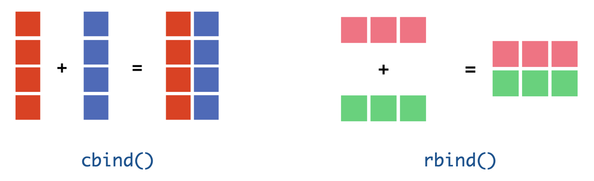

บทที่ 6 เมทริกซ์ (matrices)
เมทริกซ์เป็นกรณีทั่วไปของเวกเตอร์ กล่าวคือเมทริกซ์เป็นกลุ่มของเวกเตอร์ที่นำมาจัดเรียงต่อกันเป็นลักษณะตารางสี่เหลี่ยมจัตุรัสหรือสี่เหลี่ยมผืนผ้า ลักษณะดังกล่าวเมทริกซ์จึงเป็นวัตถุที่ใช้สำหรับเก็บข้อมูลที่มี 2 มิติ ได้แก่ แถว (row) และคอลัมน์ (column) การระบุมิติของเมทริกซ์ใด ๆ จะใช้ตัวเลข 2 ตัวได้แก่ จำนวนแถว (m) และจำนวนคอลัมน์ (n) โดยในทางคณิตศาสตร์เขียนสัญลักษณ์แทนดังนี้
\[A=(a_{ij})_{m \times n}=\begin{pmatrix} a_{11} & a_{12} & ... & a_{1n} \\ a_{21} & a_{22} & ... & a_{2n}\\ ...& ... & ... & ...\\ a_{m1}&a{m2} &... & a_{mn} \end{pmatrix}\]
จากลักษณะของเมทริกซ์ข้างต้น การอ้างอิงสมาชิกภายในเมทริกซ์จะใช้ตำแหน่งของสมาชิกในแนวแถวและคอลัมน์เป็นจุดอ้างอิง ยกตัวอย่างเช่น หากกำหนดให้ \(A\) เป็นเมทริกซ์ดังนี้
\[A=\begin{pmatrix} 1 & -2 & 10 & 5 \\ 2 & 3 & 0 & 7\\ -4 & 9 & 6 & 7\\ 4 & 3 & -1 & -2 \end{pmatrix} \]
จะได้ว่าสมาชิกแถวที่ 2 คอลัมน์ที่ 1 ของเมทริกซ์ \(A\) คือ \(a_{21}\) ซึ่งมีค่าเท่ากับ 2 หรือสมาชิกในแถวที่ 4 คอลัมน์ที่ 3 ของเมทริกซ์คือ ซึ่งมีค่าเท่ากับ -1 เป็นต้น
การสร้างเมทริกซ์ใน R สามารถทำได้หลายวิธี วิธีการแรกคือการสร้างเมทริกซ์โดยใช้ฟังก์ชัน matrix() ที่มีรูปแบบของคำสั่งดังนี้
matrix(x,nrow,ncol,byrow = FALSE)
เมื่อ x คือเวกเตอร์ที่จะนำมาจัดเรียงลงในเมทริกซ์ ที่มีจำนวนแถวเท่ากับ nrow และมีจำนวนคอลัมน์เท่ากับ ncol ส่วนอาร์กิวเมนท์ byrow = FALSE ใช้ระบุการจัดลำดับสมาชิกของเวกเตอร์ ลงในเมทริกซ์ว่าให้จัดลำดับตามแถว (จากซ้ายไปขวา) หรือให้จัดลำดับตามคอลัมน์ (จากบนลงล่าง) เช่น กำหนดให้ x<-c(1,2,3,4,5,6,7,8) เป็นเวกเตอร์ขนาด 8 x 1 หากต้องการสร้างเมทริกซ์ \(A\) ที่มีขนาด \(4 \times 2\) ใน R สามารถทำได้ดังนี้
A<-matrix(x,nrow=4,ncol=2,byrow=F)
A
## [,1] [,2]
## [1,] 1 5
## [2,] 2 6
## [3,] 3 7
## [4,] 4 8B<-matrix(x,nrow=4,ncol=2,byrow=T)
B
## [,1] [,2]
## [1,] 1 2
## [2,] 3 4
## [3,] 5 6
## [4,] 7 8จากตัวอย่างข้างต้นจะเห็นว่าการกำหนดอาร์กิวเมนท์ byrow ทำให้ผลลัพธ์ที่ได้เป็นเมทริกซ์ที่มีการจัดเรียงสมาชิกที่แตกต่างกัน โดยเมทริกซ์ \(A\) ที่กำหนดให้ byrow=F พบว่ามีการจัดเรียงลำดับของสมาชิกภายในเมทริกซ์จากบนลงล่าง ส่วนเมทริกซ์ \(B\) ที่กำหนดให้ byrow=T พบว่ามีการจัดเรียงลำดับของสมาชิกภายในเมทริกซ์จากซ้ายไปขวา
วิธีการที่สอง คือการสร้างเมทริกซ์ด้วยการเชื่อมต่อเวกเตอร์ตั้งแต่ 2 เวกเตอร์เข้าด้วยกัน โดยใช้คำสั่ง cbind() เพื่อเชื่อมต่อคอลัมน์ (column vector) เวกเตอร์ตั้งแต่ 2 เวกเตอร์จากซ้ายไปขวา หรือ rbind() เพื่อเชื่อมต่อเวกเตอร์แถว (row vector) ตั้งแต่ 2 เวกเตอร์จากบนลงล่าง ดังรูป

| midterm | final | total | |
|---|---|---|---|
| student1 | 70 | 70 | 70.0 |
| student2 | 62 | 64 | 63.2 |
| student3 | 56 | 47 | 50.6 |
| student4 | 64 | 60 | 61.6 |
| student5 | 56 | 62 | 59.6 |
ยกตัวอย่างเช่น หากต้องการสร้างเมทริกซ์ mat1 เพื่อเก็บข้อมูลคะแนนสอบกลางภาค ปลายภาค และคะแนนรวม จากตัวอย่างในตารางด้านบน สามารถทำได้โดยการสร้างเวกเตอร์ของคะแนน midterm, final และ total จากนั้นเชื่อมต่อเวกเตอร์ดังกล่าวเข้าด้วยกันโดยใช้ฟังก์ชัน cbind() ดังตัวอย่างต่อไปนี้
midterm<-c(70,62,56,64,56)
final<-c(70,64,47,60,62)
total<-0.4*midterm + 0.6*final
mat1<-cbind(midterm,final,total)
mat1
## midterm final total
## [1,] 70 70 70.0
## [2,] 62 64 63.2
## [3,] 56 47 50.6
## [4,] 64 60 61.6
## [5,] 56 62 59.6
ฟังก์ชัน rbind() ใช้เชื่อมต่อเวกเตอร์ตั้งแต่ 2 เวกเตอร์เข้าด้วยกัน โดยเป็นการเชื่อมต่อจากบนลงล่าง ผลลัพธ์ที่ได้จะเป็นเมทริกซ์ทรานสโพสของเมทริกซ์ mat1 ดังนี้
mat2<-rbind(midterm,final,total)
mat2
## [,1] [,2] [,3] [,4] [,5]
## midterm 70 62.0 56.0 64.0 56.0
## final 70 64.0 47.0 60.0 62.0
## total 70 63.2 50.6 61.6 59.6การอ้างอิงสมาชิกภายในเมทริกซ์
นอกจากนี้จะเห็นว่าการแสดงผลลัพธ์ที่เป็นเมทริกซ์ใน R จะมีตัวเลขอ้างอิงสำหรับบ่งชี้แถวและคอลัมน์ของสมาชิกแต่ละตัว โดยที่ [i,] หมายถึงสมาชิกในแถวที่ i ทั้งหมด และ [,j] หมายถึงสมาชิกในคอลัมน์ที่ j ทั้งหมด เช่น A[2,] หมายถึงเรียกดูสมาชิกในแถวที่ 2 ทั้งหมดของเมทริกซ \(A\) ทั้งหมด หรือ A[,2] หมายถึงเรียกดูสมาชิกในคอลัมน์ที่ 2 ทั้งหมดของเมทริกซ์ \(A\) ดังนี้
A[2,]
## [1] 2 6
A[,2]
## [1] 5 6 7 8A[3,2]
## [1] 7หรือการเรียกดูสมาชิกตั้งแต่แถวที่ 2 ถึง 4 ของเมทริกซ์ A ดังนี้
A[2:4,]
## [,1] [,2]
## [1,] 2 6
## [2,] 3 7
## [3,] 4 8ประเภทของเมทริกซ์
ในทำนองเดียวกับตัวแปรสเกลาร์และเวกเตอร์ หากพิจารณาจากลักษณะของข้อมูลที่เก็บอยู่ในเมทริกซ์ อาจจำแนกเมทริกซ์ออกได้เป็นสามประเภท ได้แก่ เมทริกซ์ตัวเลข (numeric matrices) เมทริกซ์ตัวอักษร (character matrices) และเมทริกซ์ตรรกะ (logical matrices) เช่นเดียวกับตัวแปรสเกลาร์ และเวกเตอร์ โดยการเก็บข้อมูลด้วย เมทริกซ์มีข้อจำกัดที่สำคัญข้อหนึ่งคือ เมทริกซ์เป็นตัวแปรที่สามารถจัดเก็บข้อมูลได้เพียงทีละประเภทเท่านั้น หากผู้ใช้พยายามจัดเก็บข้อมูลต่างประเภทกันไว้ในเมทริกซ์เดียวกัน R จะเปลี่ยนคุณสมบัติของข้อมูลให้เป็นประเภทเดียวกันทั้งหมด ยกตัวอย่างเช่น สมมติว่ามีชุดข้อมูลชุดหนึ่งประกอบด้วย เพศ อายุ น้ำหนักและส่วนสูงของนักเรียนจำนวน 8 คน ดังตารางต่อไปนี้
| เพศ | อายุ | น้ำหนัก (kg.) | ส่วนสูง (cm.) | |
|---|---|---|---|---|
| student1 | Male | 10 | 59 | 142 |
| student2 | Female | 10 | 35 | 135 |
| student3 | Male | 11 | 75 | 150 |
| student4 | Male | 2 | 20 | 95 |
| student5 | Female | 9 | 63 | 141 |
| student6 | Male | 4 | 23 | 108 |
| student7 | Male | 10 | 47 | 142 |
| student8 | Female | 14 | 59 | 155 |
การนำข้อมูลในตารางข้างต่นเข้าสู่โปรแกรม R และเก็บอยู่ในตัวแปรแบบเมทริกซ์สามารถทำได้ดังนี้
gender<-c("Male","Female","Male","Male","Female","Male","Male","Female")
age<-c(10,10,11,2,9,4,10,14)
weight<-c(59,35,75,20,63,23,47,59)
height<-c(142,135,150,95,141,108,142,155)
mat3<-cbind(gender,age,weight,height)
mat3
## gender age weight height
## [1,] "Male" "10" "59" "142"
## [2,] "Female" "10" "35" "135"
## [3,] "Male" "11" "75" "150"
## [4,] "Male" "2" "20" "95"
## [5,] "Female" "9" "63" "141"
## [6,] "Male" "4" "23" "108"
## [7,] "Male" "10" "47" "142"
## [8,] "Female" "14" "59" "155"
จากตัวอย่างข้างต้นผู้อ่านจะสังเกตเห็นว่า age, weight และ height เป็นเวกเตอร์ตัวเลข ส่วน gender เป็นเวกเตอร์ตัวอักษร เมื่อนำเวกเตอร์ทั้งหมดมารวมกันเป็นเมทริกซ์ mat3 โปรแกรม R จะเปลี่ยนคุณสมบัติของเวกเตอร์ตัวเลขทั้ง 3 ให้เป็นตัวอักษร ทั้งนี้เพื่อให้สามารถอยู่ร่วมกับ gender ที่เป็นเวกเตอร์ตัวอักษรได้ ซึ่งทำให้ไม่สามารถนำข้อมูลดังกล่าวไปดำเนินการในเชิงคณิตศาสตร์ได้ ถึงแม้ว่าการแสดงผลจะดูเหมือนเป็นตัวเลขก็ตาม ตัวอย่างต่อไปนี้จะแสดงให้เห็นว่า เมื่อนำข้อมูลน้ำหนัก และส่วนสูงของนักเรียนภายในเมทริกซ์ mat3 มาดำเนินการทางคณิตศาสตร์ เช่น นำมาคำนวณค่าดัชนีมวลกาย (body mass index: BMI) ดังสูตร
\[BMI=\frac{weight}{(height/100)^2}\]
ซึ่งจะเห็นว่าโปรแกรมแสดงว่ามีความผิดพลาดเกิดขึ้นว่าไม่สามารถคำนวณค่าข้อมูลที่ไม่ใช่ตัวเลขได้ ดังนี้
mat3[,3]/(mat3[,4]/100)^2
## Error in mat3[, 4]/100 : non-numeric argument to binary operator